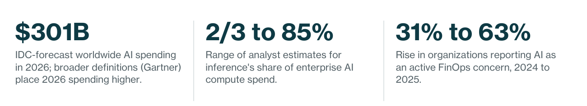
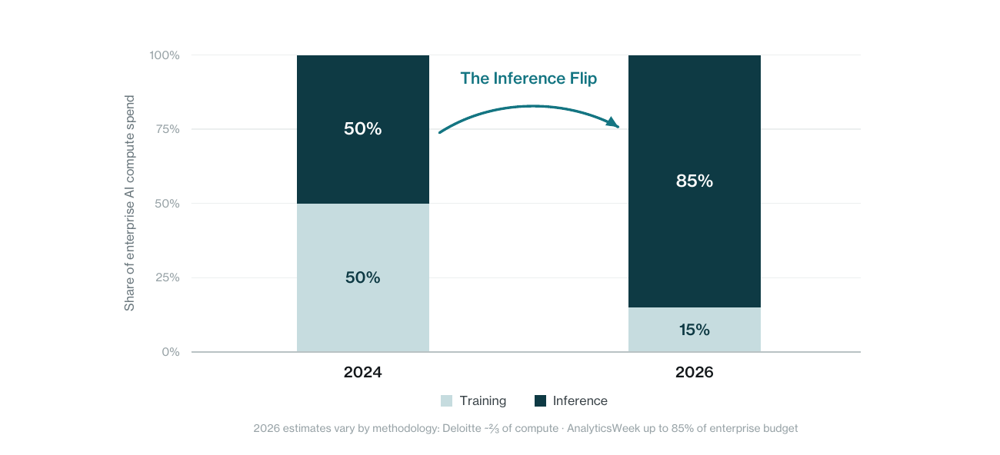
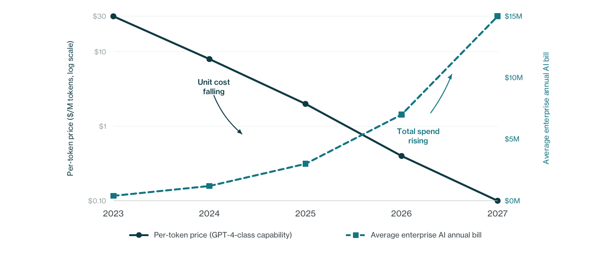
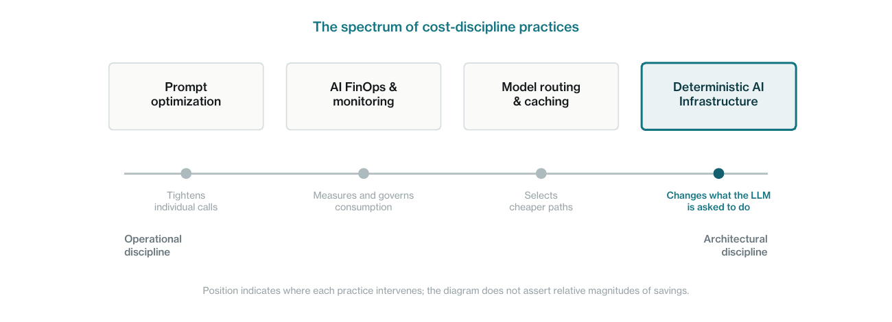
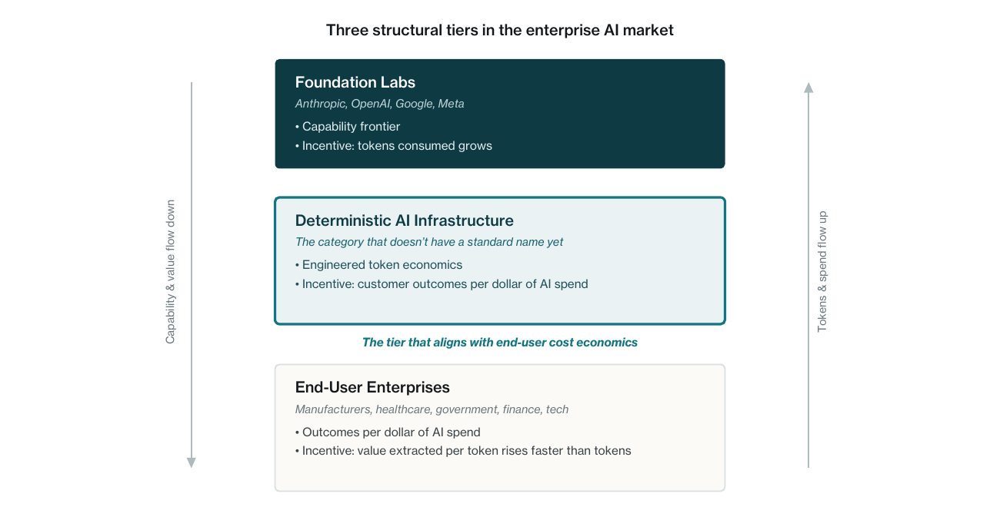
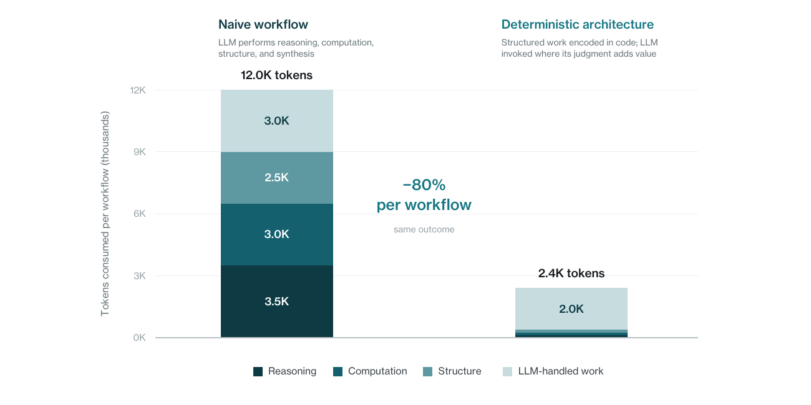

This is a synthesized analysis, not original empirical research. It draws on publicly available analyst forecasts, industry surveys, and corporate reporting from sources including IDC, Gartner, Deloitte, Citi, Andreessen Horowitz, AnalyticsWeek, NVIDIA, the FinOps Foundation, the International Energy Agency, and others, listed in full in the references at the back. Numerical figures in this paper are forecasts, estimates, or modeled projections from those sources, attributed in-line where they appear. Worked examples, such as the hospital comparison in Part 3, are illustrative rather than measured outcomes; actual token reductions and cost gaps vary by workflow complexity and deployment context.
This revision keeps the May 2026 argument substantially intact, with plainer language throughout. It carries one rename from the first printing: the paper itself, first published as After the First Lap. The tier’s name, Deterministic AI Infrastructure, stands; Part 6 sets out why, against the objections raised since May. A section at the end covers what has changed between publication and mid-August 2026.
IDC forecasts worldwide AI spending of $301 billion in 2026, and broader market definitions place the figure higher. The investment is real, the productivity gains are real, and the strategic urgency driving the spend is justified. What is also real, and increasingly visible to the CFOs whose budgets fund it, is that the cost of running AI in production is now growing faster than the cost of buying it.
According to industry reporting collected by Andreessen Horowitz, some Fortune 500 companies now report monthly AI inference bills in the tens of millions of dollars. Analyst estimates of inference’s share of enterprise AI compute spend range from roughly two-thirds (Deloitte) to as high as eighty-five percent (AnalyticsWeek). Forty-two percent of enterprises name workflow optimization as their top AI spending priority for 2026, overtaking expansion for the first time.

This paper argues that a structural reckoning is now underway. The first lap of enterprise AI was defined by three conditions running together: urgency to adopt, real and measurable productivity gains, and relative affordability. Pricing was calibrated to drive usage, and that affordability is what made the urgency rational. The second lap, already beginning, will be different. Affordability is ending, urgency persists, and the productivity gains are now embedded in operations that enterprises cannot easily wind down. Boards are starting to ask what every dollar of AI spend produces, and that scrutiny matches the FinOps adoption data showing AI cost concern roughly doubling year over year. Companies that cannot answer the question face a forced choice between rationing AI use, raising prices, cutting headcount further, or absorbing costs they cannot sustain.
Behind this reckoning is a more specific dynamic: a structural dependency on early-market foundation model pricing is taking shape inside enterprise operations. Current per-token prices are calibrated to drive adoption, and may not reflect the long-run, fully loaded economics of providing frontier models. As workflows become load-bearing for production operations, switching costs rise sharply. Foundation model labs face their own real economics: capital spending on data centers, energy, talent, and eventually investor expectations of returns. Most analysts therefore expect pricing to drift toward sustainable levels over time. This is not a criticism of the labs. It is the normal arc of an infrastructure sector maturing. The exposure it creates for end-user enterprises, however, is real and worth planning for now rather than later.
The companies best positioned for the second wave are not the foundation model labs, and not the end-user enterprises trying to build AI capability internally. They are a third category: intermediaries whose engineering encodes the structured, predictable work in deterministic code and invokes large language models where their judgment adds value. This category needs a name. This paper proposes one: Deterministic AI Infrastructure (DAII).
1.The Numbers Are Becoming Impossible to Ignore
The first lap of enterprise AI ran on three conditions in alignment: adoption pressure that made urgency rational, productivity gains that made spending justifiable, and pricing that made the economics tolerable. The first two conditions remain. The third is changing. The numbers in this section establish the scale and direction of that change.
Adoption has crossed the tipping point
Enterprise AI is no longer experimental. Sixty-four percent of organizations report actively using AI in operations, and seventy percent in North America. Eighty-six percent of enterprises increased their AI budgets in 2026. The number of organizations with at least forty percent of AI projects in production is set to double within six months. The pilots have become deployments.
Spending follows. IDC’s worldwide AI spending guide forecasts $301 billion in 2026. Broader market definitions place the figure higher: Gartner’s 2026 worldwide AI spending forecast reaches $2.5 trillion, and Citi projects the total AI market above $4.2 trillion by 2030 with enterprise AI roughly half of that. These figures measure different things. IDC tracks AI-centric systems and software narrowly, while Gartner’s broader definition includes adjacent IT infrastructure and services attributable to AI workloads. The numbers are not directly comparable, but the direction across methodologies is the same: sharply up. According to NVIDIA’s State of AI Report 2026, the hyperscalers were collectively forecast to exceed $600 billion in capital expenditure in 2026, with roughly $450 billion tied directly to AI infrastructure. (Their own second-quarter guidance has since moved well past that; see the update at the end of this paper.) Gartner projects that data center systems spending will jump 55.8 percent in 2026, the largest single growth category in enterprise IT.
Inference has replaced training as the cost driver
Two activities consume AI compute. Training is the one-time work of building a model in the first place. Inference is the recurring work of running that model every time someone uses it. Public attention has focused on training, because the costs of frontier model development make headlines. The shift in enterprise AI economics, however, is happening on the inference side, where the cost compounds with every query, every workflow, every deployment. Estimates vary on the exact share. Deloitte expects inference to account for roughly two-thirds of all AI compute in 2026, while AnalyticsWeek puts inference as high as eighty-five percent of the enterprise AI budget. The direction is the same across estimates: the cost story has moved from training to inference. By 2026, many enterprise AI cost models had crossed into inference-dominant economics, a shift some analysts have called the Inference Flip.

The cause is structural. Foundation model pricing is denominated in tokens, the units of text the model processes, roughly equivalent to fragments of words. A simple chatbot query triggers one inference call and consumes a predictable number of tokens. An agentic AI workflow, where an autonomous agent reasons through a task, retrieves context, calls tools, checks its outputs, and corrects itself, may trigger ten to twenty inference calls for a single user request. According to Gartner, agentic models require between five and thirty times more tokens per task than a standard generative AI chatbot. A workflow priced as a $0.001 chatbot interaction during the pilot phase becomes a $0.10 to $1.00 transaction in agentic production: a hundred-fold to thousand-fold multiplier on unit cost.
Most enterprises did not model this multiplier when they committed to scaled deployment. The pilot economics, calculated on single-query API calls, bore no relationship to the production economics of multi-step agentic loops running thousands of times per day. The bills arrive after the architecture has been built.
The cost discipline conversation has started
The leading indicators of a coming spending discipline are already in the data. According to the FinOps Foundation’s 2026 State of FinOps Report, organizations reporting AI as an active concern for FinOps, the discipline of governing cloud and infrastructure spending against business value, jumped from thirty-one percent in 2024 to sixty-three percent in 2025. CloudZero’s 2024-2025 FinOps Adoption Survey finds that AI and ML workloads now represent twenty-two percent of total cloud costs at SaaS and IT companies. Roughly seventy percent of large enterprises maintain a dedicated FinOps or cloud economics team. Forty-two percent of enterprises name workflow optimization as their top spending priority for 2026, overtaking expansion for the first time.
Token leaderboards and token budgets are becoming standard management tools across enterprise AI teams. The average enterprise AI budget grew from $1.2 million per year in 2024 to $7 million in 2026, a roughly 480 percent increase in two years. IDC’s FutureScape 2026 warns that organizations with dedicated FinOps resources still underestimate AI infrastructure costs by up to thirty percent.
These numbers are not signs of crisis. They are signs of maturity. Enterprises are doing what they should do when a new technology category moves from experimental to operational: they are starting to count what it costs.
The energy footprint is real
AI’s compute footprint is also a literal infrastructure footprint. The International Energy Agency projects that global data center electricity demand could double between 2022 and 2026, fueled significantly by AI adoption. By 2030, global data center electricity demand is projected to reach approximately 945 terawatt-hours, slightly more than Japan’s entire current electricity consumption. AI-related electricity consumption is projected to reach 4.5 percent of total U.S. electricity demand by 2027.
Residential electricity prices in the U.S. jumped 7.1 percent in 2025, more than double the inflation rate, and over twenty percent in some states. AI data centers are not the only driver, but they are a substantial one. The cost of every token generated is ultimately a cost in megawatts and grid capacity, and that cost is increasingly visible to ratepayers, regulators, and CFOs alike. Enterprises that have been operating as if AI were a free good, which most still effectively are, will meet that reality through their cloud bills, their utility bills, and increasingly through public attention on the electricity costs their AI consumption is helping to drive.
2.Why This Reckoning Is Structurally Unavoidable
The two curves running in opposite directions
The most confusing part of the current moment, for enterprise finance teams, is that two opposing trends are running at the same time. Per-token inference prices have fallen sharply, by roughly nine-fold to nine-hundred-fold per year across various capability benchmarks tracked by Epoch AI, and Gartner forecasts a further ninety percent reduction by 2030. At the same time, total enterprise AI bills are rising rapidly. Both can be true, because token prices and total token consumption are not the same thing. Costs per unit are collapsing. Units consumed are exploding. The product of the two is what shows up on the bill.

This pattern is not new. The same dynamic played out in cloud computing a decade ago: per-instance prices fell consistently, while total cloud bills grew steadily, because consumption grew faster than unit prices fell. That pattern produced an entire industry, cloud FinOps, whose job is to discipline consumption against business value. AI is on the same trajectory, only steeper, because the consumption multiplier from agentic workflows is structurally larger than anything cloud computing produced.
Why end users cannot solve this themselves at scale
When a new cost category appears, enterprises usually follow a predictable pattern: first they ignore it, then they try to manage it through procurement, then they try to build internal capability to address it directly. AI is now in the early stages of the second phase, and a meaningful number of enterprises are starting to consider the third: building internal AI infrastructure, training their own models, running inference on their own GPUs.
For most enterprises, that is the wrong answer. Building an internal AI capability that matches what a foundation model lab provides requires an order of investment that is rarely justifiable for any single enterprise. The talent is scarce, the infrastructure is expensive, the iteration speed is slower than what specialist labs can sustain, and the gap between an internal model and a frontier model widens every quarter as the labs keep pushing the capability frontier. Eli Lilly building a $200 million purpose-built supercomputer for pharmaceutical AI is the exception, not the model. For most companies, doing this internally either underdelivers on capability, overdelivers on cost, or both.
What enterprises actually need is not their own foundation model. They need their existing AI consumption to produce more value per token. That is a different problem, and a different category of solution.
The spectrum of cost-discipline practices
It would be a mistake to suggest enterprises are doing nothing to discipline their AI spend. A real spectrum of practices is emerging, each producing measurable savings. The honest question is not whether these practices work. They do. The question is where each one’s structural ceiling sits.
Prompt optimization tightens individual invocations: shorter system prompts, better examples, more disciplined context. Specialist teams can pull meaningful savings out of production workflows this way. The ceiling, however, is set by the architecture beneath it. Better prompts make each call more efficient; they do not change the underlying division of work between structured logic and the LLM.
AI FinOps and consumption monitoring extend cloud FinOps practice into AI workloads: showback and chargeback, anomaly detection on token spend, budget allocation by workflow or team. This is governance value, and it is real. But FinOps measures consumption; it does not change per-workflow economics. A FinOps team can tell a CFO that a customer-service workflow costs $12 per run. It cannot make that workflow cost $2.40 per run without an architectural change beneath it.
Model routing and caching sit between prompt optimization and deeper architectural change. Sending simpler queries to cheaper models, caching responses to repeated questions, batching where latency permits: all of this produces meaningful savings on the right workloads. The ceiling here is the agentic consumption multiplier. A workflow that loops through ten model invocations to complete a task still loops through ten invocations, whichever model answers each one.
Deterministic AI Infrastructure sits at the architectural end of this spectrum. It is not a replacement for prompt optimization, FinOps, or routing; mature enterprise AI practice will use all of them. What DAII adds is a structural change to what the LLM is asked to do in the first place. Where workflows have stable structure, the predictable cognitive work is encoded in deterministic code, and the LLM is invoked where its judgment adds value beyond what structured logic provides. The cost gap between DAII and the operational disciplines is not incremental; it compounds, because the architecture attacks the consumption pattern itself rather than optimizing each call within it.

Why the cost-governance layer must sit elsewhere
Current foundation model pricing reflects a specific moment in market formation. Per-token prices are heavily shaped by adoption incentives and intense competition, and may not reflect the full, long-run economics of operating frontier-scale infrastructure. The arrangement is sustained in part by venture capital, hyperscaler cross-subsidies, and growth-stage investor tolerance for losses. None of this is malpractice; it is the normal early-market pricing pattern for capital-intensive infrastructure. Cloud computing, telecom, and electric utilities all passed through equivalent phases.
What follows next is also normal: pricing tends to drift toward sustainable margin over time. Foundation labs face their own real economics: capital spending on data center buildout, energy costs that move with global commodity markets, talent costs that compound with capability competition, and eventually investor expectations of returns matching the capital deployed. None of these costs trend downward in a coordinated way, and none of them are negotiable by foundation labs in any structural sense. Most analysts therefore expect costs to be passed through to customers over time, as they typically are in capital-intensive infrastructure categories. Even if per-token prices continue falling, enterprises remain exposed if production token volumes and workflow dependence grow faster than unit-cost reductions, which the consumption multipliers from agentic workflows make likely.
The exposure this creates for end-user enterprises is the specific combination that makes early-market infrastructure pricing dangerous: real urgency to adopt (competitive pressure), real value (the productivity gains are genuine), and engineered affordability (pricing that may not reflect the long-run, fully loaded economics of frontier-model provision). Each factor alone is manageable. Together, they produce structural dependency. By the time pricing normalizes, AI workflows will be load-bearing for operations that enterprises cannot easily wind down. Switching to a different foundation lab solves nothing if all foundation labs face the same eventual cost normalization. Even modest per-token price increases will land hard on enterprises whose token volumes are now measured in production scale rather than pilot scale. The risk is not that AI becomes unaffordable overnight. The risk is that enterprises allow AI workflows to become operationally indispensable before their unit economics are governable.
Foundation labs are not structurally positioned to resolve this exposure for their own customers. Their primary incentive is for total token consumption to grow, not for any given customer’s consumption to be disciplined against business value. Every saved token at the application layer is revenue they do not capture. They also cannot credibly stand between a customer and their own pricing model; they are the entity the customer is paying. The disinterested party, the one whose financial incentive aligns directly with the customer getting more value per dollar, has to be a third entity.
End-user enterprises can attempt to build that disinterested function internally, and many will try. The economics of doing so eventually fail. A hospital’s core competency is healthcare delivery, not token economics. Internal AI cost-governance teams are real expenses that compete with mission-critical investment. The first dollar spent on internal token FinOps produces meaningful returns; the tenth dollar produces less; the hundredth often produces a team whose ongoing cost exceeds the savings it generates. Enterprises that let internal cost-governance scale without bound end up with an administrative function that is itself a form of bureaucratic drag: capacity absorbed by managing AI consumption rather than delivering on the mission AI was deployed to support.
DAII resolves the structural trap by amortizing the engineering work that end-user enterprises cannot amortize alone. The intermediary tier specializes in disciplined consumption as its core competency rather than as a distraction from it. Its costs spread across many customers; its incentives align with each customer’s value per token; its engineering depth compounds in ways internal teams cannot easily replicate. The category is not a luxury feature for cost optimization. It is the risk-mitigation layer the market is forming, because the alternative is structural exposure that end users cannot fully hedge themselves.
“Anyone can call a foundation model API. Few teams can architect workflows where structured logic does the predictable cognitive work and the LLM is invoked where its judgment adds genuine value.”
The result is not simply a cost problem. It is a market-structure problem: the function enterprises need is economically misaligned with the two categories they currently rely on, which is why a third category is forming.
The three-bucket market
The enterprise AI market is resolving into three structurally distinct buckets, each with different incentives and different roles in the value chain.

Of these three buckets, the middle one has the clearest structural incentive to make the end-user enterprise’s AI spend produce more value per dollar. That alignment is the moat. It is also the reason this category will exist as a distinct tier, not as a feature of either of the other two.
3.Deterministic AI Infrastructure
Defining the category
Deterministic AI Infrastructure is the engineering discipline of making AI workflows produce consistent, predictable, high-quality outputs at substantially lower token cost than naive prompt engineering achieves. The discipline rests on a single architectural principle: structured logic handles what structured logic handles reliably, large language models handle what calls for their judgment, and the work is divided accordingly.
A naive AI workflow asks the LLM to do everything: reason about the data, compute the answer, structure the response, and write up the result in natural language. Each of those four functions costs tokens. Where the workflow has stable, repeatable structure, three of them (reasoning, computation, and structure) can often be done deterministically in code, with the answer fixed before the LLM is invoked. The LLM is then asked to articulate, which is a job it is genuinely well suited to. Where the workflow is genuinely open-ended, or the structure has not yet stabilized, that decomposition will not fit, and the LLM-led architecture remains the right one. DAII is the discipline of recognizing which is which.
It is worth being explicit about what this paper is not arguing. The argument is not that generative AI or agentic AI should be avoided, or that reasoning workloads belong outside AI systems. Plenty of legitimate enterprise work calls for genuinely open-ended reasoning, and frontier models will be the right tool for it. The argument is narrower: at production scale, for workflows with stable structure, undisciplined LLM invocation produces cost and quality variance that disciplined architecture meaningfully reduces. The discipline applies whether the workflow is linguistic, agentic, or reasoning-heavy. The question is not whether AI should be used. The question is whether the use is economically governable at the scale enterprises now deploy it.
The architectural pattern, separating deterministic logic from LLM-handled work, has antecedents in compound AI systems, structured outputs, AI workflows, and validation pipelines. What is new is the packaging: the consolidation of these patterns into a procurement-recognizable infrastructure tier defined by cost-per-decision economics rather than by any single technical primitive.

The result is meaningful. The same business outcome, the same diagnostic read, the same analysis, the same recommendation, can be produced for a fraction of the tokens a naive workflow would consume. Output quality is higher, because the deterministic layer constrains where hallucination can occur. Output is more consistent across runs, because the structured work is computed reliably before the LLM contributes. Cost is more predictable, because token consumption per workflow becomes a known engineering constant rather than a function of how much reasoning the LLM happens to do on a given call.
Why it cannot be easily replicated
Anyone can call a foundation model API. Few teams can architect workflows where structured logic does the predictable cognitive work and the LLM is invoked where its judgment adds genuine value. That is craft, and it compounds with team experience. It is not a moat that can be reproduced from a press release or a quarterly engineering hire. The companies operating at this level today will widen the gap over companies that begin trying to develop the discipline in 2027, and the gap will compound as token economics tighten.
Several specific engineering patterns distinguish a DAII tier from a generic AI consultancy or prompt-engineering shop:
Pre-computed structure. Where computation has a deterministic correct answer (a score, a classification, an aggregation, a lookup), that answer is computed in code, and the LLM works with the result rather than rediscovering it on every call.
Locked-facts injection. The prompt explicitly tells the model what is true and what it must not contradict. Tokens are spent once on rails rather than retried after every contradiction.
Bounded output schemas. Required JSON keys force a fixed output shape. No preamble, no rambling synthesis, no rebuilt context. Every output token serves a specific report field.
Validation-first pipelines. Output is validated against the canonical structure before it reaches the customer. Inconsistencies are caught and corrected, not shipped.
Token telemetry as a first-class metric. Input and output tokens per workflow are tracked, optimized, and reported alongside output quality.
The approach is not without trade-offs. Building a DAII tier requires substantial upfront investment in structured logic, canonical descriptors, and validation pipelines. A common objection is that hard-coding logic produces systems that become brittle when conditions change. The objection misreads the architecture. The determinism here refers to execution (given a defined input, the structured layer produces consistent output), not to immutability of the underlying rules. Production systems of this kind are maintained continuously, the way any serious software system is maintained: rules are updated as domains evolve, canonical structures are revised as new patterns emerge, and validation pipelines catch the drift between encoded logic and operational reality. The discipline is active stewardship of the structured layer, not a one-time encoding.
Frontier model improvements in reasoning may also narrow the token-efficiency gap over time for simpler tasks. For the high-volume, structured enterprise processes that dominate production AI spend, however, the advantages are decisive, and they are best understood as cost and quality improvements arriving together rather than as separate trade-offs. Lower token consumption, lower output variance, stronger validation, domain-correct logic, predictable per-decision cost, and reduced exposure to foundation-pricing volatility are not a list of independent benefits; they are the joint product of engineered consumption. Raw LLM output is variable in cost and variable in quality; engineered consumption disciplines both. Critics of generative AI output, the inconsistent and occasionally unusable results that have lately been called work slop in enterprise settings, are pointing at the same underlying problem that naive token consumption creates. DAII addresses both faces of that problem at once.
The domain-expertise nexus
There is a second moat that the engineering-patterns frame alone obscures. The structured logic doing the cognitive lift has to encode correct domain knowledge. A diagnostic engine for HR cases needs to encode employment law and the realities of how HR organizations actually function. A diagnostic engine for clinical operations needs to encode clinical workflow norms. A diagnostic engine for federal program performance needs to encode contracting regulations and program management practice. Software engineers without that subject-matter depth can build a beautifully architected system that produces structurally elegant nonsense, because the rules embedded in the deterministic layer are wrong or incomplete.
This is a different and more dangerous failure mode than LLM hallucination. A naive LLM workflow that hallucinates may at least reveal instability through variance across runs; the variance itself is a signal that something may be off, and a domain expert reviewing two or three outputs can usually spot the inconsistency. A deterministic system encoding incorrect domain logic can be wrong consistently, silently, and at scale. The same flawed answer gets produced reliably across every workflow, looks credible because the architecture around it is sound, and only fails the moment a domain expert audits the underlying rules, which usually happens long after decisions have been made on the strength of its output.
There is a tempting counter to this concern: developers can use LLMs to fill their domain knowledge gaps when building the structured layer. LLMs can legitimately assist in drafting code, taxonomies, and rules. The problem is what happens next. If the code’s logic is derived from LLM output without independent validation by domain experts, the deterministic layer is deterministic only in execution, not in epistemic authority. The same flawed reasoning will produce the same flawed answer reliably, with the appearance of engineered rigor and the substance of LLM reasoning, and with worse traceability than either. The LLM-as-knowledge-source approach is valid for narrow or well-documented domains. In any domain where practical expertise matters, it requires a domain expert in the loop to validate the rules before they are encoded. There is no shortcut.
DAII done well is therefore a meaningfully different kind of organization than a prompt-engineering shop or a general AI consultancy. It requires both engineering depth and lived subject-matter depth, and the integration of the two is itself a form of craft. It is harder to staff, harder to imitate, and a substantially stronger moat than engineering competence alone.
How the architecture changes the economics
Consider, as an illustrative example, a hospital deploying an AI workflow to surface operational patterns from internal data. A naive implementation passes the data to a foundation model with a system prompt and asks it to identify issues, prioritize them, write recommendations, and produce a report. That workflow may consume 8,000 to 15,000 output tokens per run. At enterprise volumes, this scales into meaningful monthly bills, with output quality varying significantly across runs, because the LLM is doing both the analysis and the writing at the same time.
The same hospital, working with a DAII provider, would receive the same operational read produced through a different architecture. A structured diagnostic engine, built on the provider’s proprietary logic, performs the analysis offline. The output is a canonical descriptor of findings, severities, priorities, and recommended actions. The LLM is then invoked to produce a sector-aware narrative drawing on the structured findings. Token consumption drops from roughly 12,000 to 2,400 tokens per run, the eighty percent reduction shown in Figure 5. Output quality is more consistent, because the structured layer anchors the report’s substantive content. Per-run cost becomes a known engineering constant the provider can quote in advance.
The token numbers here are illustrative, not measured from a specific deployment. The naive figure assumes a workflow that delivers raw operational data to a frontier model with a prompt asking it to perform reasoning (roughly 3,500 tokens), perform computation across the data (roughly 3,000), structure the response into a report shape (roughly 2,500), and write the narrative (roughly 3,000): totals consistent with reports of agentic and multi-step enterprise workflows. The deterministic figure assumes the first three functions are encoded in code and the LLM is invoked to produce the narrative from the structured findings, plus a small amount of context delivery. Real deployments vary; the eighty percent figure is the order of magnitude this architecture produces in workflows where the cognitive work is highly structured, not a guarantee for every workflow.
The hospital does not see this architecture. The hospital sees a faster, more reliable, and more cost-predictable diagnostic. The provider sees a sustainable margin structure that does not erode as foundation model pricing pressure works through the market.
Where SaaS fits
Deterministic AI Infrastructure is most naturally a SaaS layer, sitting between an end-user enterprise and the foundation model APIs the workflow ultimately consumes. The SaaS provider holds the proprietary logic, the structured diagnostic engine, the pre-computed canonical descriptors, and the validation pipelines. The customer pays for outcomes (reports produced, decisions surfaced, diagnostics completed) at a price the SaaS provider can offer profitably, because the underlying token consumption is engineered to be a known and disciplined constant.
This pricing model has a property that pure foundation model APIs cannot match: the customer’s per-decision cost is predictable. A hospital can quote a cost-per-diagnostic to its CFO and have it remain accurate over time, even as foundation model pricing changes underneath. The SaaS provider absorbs the volatility in exchange for the engineering investment it has made in disciplined consumption. The value to the customer is not token reduction alone. It is lower variance, stronger validation, domain-correct logic, and reduced exposure to foundation-pricing volatility.
4.What Happens to Enterprises That Don’t Adapt
The forced choice
Enterprises currently absorbing AI costs as a strategic premium are likely to face the same financial discipline that every other expense category faces. Boards do not tolerate indefinite spending growth without measurable return. CFOs are increasingly asking what every dollar of AI spend produces. The Deloitte 2026 enterprise AI report finds that twenty percent of organizations are already growing revenue through their AI initiatives, while seventy-four percent hope to in the future. That gap is unlikely to stay open indefinitely. The companies in the seventy-four percent will be asked to show that their hopes are converging on outcomes.
When that discipline arrives, and the FinOps adoption data suggests it has already started arriving for the majority of large enterprises, companies that have not engineered their AI consumption will face a forced choice among four options, all of them painful:
Ration AI use. Restrict the workflows employees can run, throttle agent loops, cap monthly token budgets per team. This works financially, but it reverses the productivity gains AI was deployed to deliver.
Pass costs to customers. Raise prices to cover unsustainable AI bills, eroding competitive position and inviting market share loss to competitors with more disciplined cost structures.
Cut headcount further. The layoffs already justified by AI deployment turn into a second wave of layoffs to fund AI deployment. This compounds rather than resolves the cost problem.
Spend through it. Continue absorbing AI costs as strategic, until the absorption is no longer sustainable. This is currently the most common posture and the least defensible.
The alternative
The alternative is to govern AI consumption so that it produces more value per token before the financial discipline arrives. For a small number of enterprises operating at hyperscale, this can be done with internal engineering capability. For most enterprises, it cannot. The patterns are specialized, the testing infrastructure is expensive to build, the canonical structures must be calibrated to the domain, and the ongoing optimization requires continuous familiarity with foundation model behavior that most internal teams do not have time to acquire. What practical action looks like for most enterprises, therefore, is procurement: identifying vendors whose products already embody this engineering discipline, and integrating them in place of, or alongside, naive foundation model invocation.
Enterprises that take this path will not need to ration use, raise prices, or cut headcount to fund AI. They will be paying meaningfully less per workflow than competitors who deferred the engineering work, and producing comparable or better output. That cost gap compounds quarterly as AI consumption volumes grow. This is the entry point for the Deterministic AI Infrastructure tier.
Where this thesis could be wrong
Papers like this one are not proofs. The argument here rests on projections from analyst firms whose methods differ, on incentive analysis that holds in aggregate but not in every case, and on an interpretation of where enterprise AI is heading that other careful observers will read differently. Three scenarios in particular would weaken or invalidate the thesis.
Frontier efficiency could outrun the dependency curve. If per-token prices continue falling sharply through 2028, driven by model distillation, more efficient architectures, and competitive pressure across foundation labs, and if agentic consumption grows more slowly than current projections suggest, the structural exposure shrinks. The argument here assumes that the consumption multiplier from agentic workflows will outpace unit-cost reductions, which Gartner’s 5x to 30x token multiplier estimate supports but does not guarantee. If unit costs fall faster than consumption grows, naive LLM invocation may remain economically viable at production scale longer than this paper argues.
Hyperscalers or foundation labs could vertically integrate structured-logic layers themselves. Nothing prevents OpenAI, Anthropic, Google, or the hyperscalers from building deterministic orchestration capabilities into their platforms directly, in which case the intermediary tier this paper describes would not form as a distinct procurement category but would be absorbed upward. The incentive argument suggests they will not, because every saved token is revenue they do not capture. But incentive arguments hold in aggregate, not in every case. A foundation lab that decides enterprise margin matters more than total token volume could change the structure materially.
Enterprises could absorb higher AI costs as a new normal. The paper argues that financial discipline will arrive when boards begin demanding measurable return on AI spend. That arrival depends on macroeconomic conditions, on competitive dynamics within each sector, and on whether the productivity gains AI delivers prove durable enough to justify open-ended spending. If AI productivity gains are large enough and visible enough, enterprises may simply accept higher AI bills the way they accept higher cloud bills: as a cost of doing modern business. The forced choice this paper describes may not arrive on the timeline implied.
The thesis is most likely to hold under three conditions, expressed here as approximate thresholds rather than precise predictions. First: agentic and multi-step workflows continue to grow as a share of production AI spend, plausibly reaching 30 percent or more by end-2027, consistent with current adoption trajectories and Gartner’s 5x to 30x token multiplier estimate for agentic models. Second: foundation lab per-token prices decline by less than roughly 5x annually through 2028, meaning unit-cost reductions do not outrun the consumption multiplier; this is consistent with publicly reported lab financials showing losses substantially exceeding revenue even as revenue grows. Third: CFO scrutiny of AI spending continues to intensify along the trajectory the FinOps adoption data already shows, the 31 percent to 63 percent rise from 2024 to 2025, such that AI cost governance becomes standard practice across most large enterprises by 2028. The thesis weakens materially if any one of these three conditions reverses. Readers should weigh the argument against their own view of how likely each condition is to hold.
These thresholds are illustrative, derived from current analyst trajectories and reported lab financials rather than from formal econometric modeling. They are intended as defensible reference points against which the thesis can be tested, not as precise forecasts. The update section at the end of this paper scores them against three more months of data.
5.What Enterprise Buyers Should Measure Now
This section is for the CFO, head of procurement, or analyst about to buy AI software at scale. Most AI procurement conversations today are driven by product demos: vendors show what their tool can do, and buyers decide whether to buy based on capability. That made sense in the first lap, when affordable pricing made cost a secondary concern. In the second lap, the economics of running the product matter as much as the capability. The five questions below help a buyer distinguish vendors who have engineered for durable, predictable economics from vendors whose pricing relies on conditions that may not last. Buyers who ask these questions in 2026 will be ahead of their peers when these questions become standard procurement practice.
1. What does one full run of your product actually cost you? Not the API price quoted by the foundation lab: the full cost the vendor incurs each time a customer runs the workflow end to end. A vendor that cannot give a concrete dollar figure has not engineered the product to a known cost. That is a signal that pricing is being set by guesswork or by hope, not by economics that hold up at scale.
2. How much does cost vary from one run to the next? Averages hide volatility. A workflow that averages 50 cents per run but occasionally spikes to 50 dollars, because the underlying AI got stuck in a loop or pulled in too much context, is not a workflow with predictable economics. Ask for the typical cost, the cost on a bad day, and the cost on a worst-case day. (In statistical terms: median, ninety-fifth percentile, and ninety-ninth percentile.) A vendor that tracks these has done the work. A vendor that doesn’t has not.
3. What happens to your prices if your AI supplier raises theirs? Much of foundation model pricing today is shaped by venture capital, by hyperscaler cross-subsidies, and by some frontier labs' willingness to operate at substantial losses to capture market share. Those conditions are unlikely to persist indefinitely. A vendor whose product economics collapse if foundation model prices rise twenty percent has built their business on someone else’s unsustainable pricing. A vendor with engineered consumption will see margin pressure under that scenario, but not margin collapse. Ask which one you are buying.
4. How much of the work is done by your code versus by the AI? This is the question that separates engineering from prompt engineering. A vendor who can describe specifically which parts of the workflow run on structured code (predictable, fast, cheap, repeatable) and which parts call out to a large language model (powerful but expensive and variable) is operating at the engineering tier this paper describes. A vendor who waves the question off, or answers vaguely, has not done the structural work. The distinction matters because it tells you whether the product’s economics will hold up as your usage grows.
5. Show me how you check that the output is right. Output that has not been checked against a known correct structure is output that may quietly be wrong. A vendor whose product simply ships whatever the AI returns is selling demonstrations, not infrastructure. A mature AI product has a validation layer that catches inconsistencies before they reach the customer, and reports them when they occur, rather than hiding them. Ask to see it. If it does not exist, that is a signal about the product’s readiness for production use.
6.A Note on Naming
Categories that are unnamed are categories that are hard to procure. Enterprise buyers cannot create line items for things they do not have language for. Analyst firms cannot create market quadrants for categories that do not yet exist in their taxonomies. Investors cannot allocate capital to a thesis that has not been articulated.
The May edition of this paper proposed Deterministic AI Infrastructure as the name for this tier. This edition keeps it. In the months since publication, the same phrase has been claimed by adjacent meanings: regulatory reproducibility, hardware-level determinism in GPU architecture, and rule-bounded governance of agents. Read carefully, that is convergence rather than dilution: three fields organizing around the property this paper argues the market is about to price. Categories are rarely named by coining a phrase nobody has used. They are named by whoever defines a circulating phrase precisely enough that buyers can procure against the definition.
Deterministic earns its place because it names the mechanism, not the promise. Every vendor in enterprise AI already claims outcomes, results, and business value; a name built from those words can be asserted on any slide. Determinism can be tested and disproved: run the same inputs twice and compare. The five buyer questions in Part 5 are determinism questions in commercial dress, and a category named for the property tells the buyer what to ask and how to check the answer.
The objection that deterministic means frozen is answered in Part 3: the determinism is of execution, not of the rules, which are maintained the way any serious software is. Infrastructure carries the rest: capital scale, not consulting hours. Generative AI is the foundation. Deterministic AI Infrastructure is the engineering layer that makes it economical for enterprise production, and it is hard for a prompt engineering shop to claim, because the structured logic takes years to build.
The category will exist with or without this specific name. Other terms, such as compound AI systems, AI Efficiency Layer, Structured AI, Token Economics Infrastructure, and Inference FinOps, are circulating in adjacent conversations. The name that ultimately sticks will be the one that buyers, sellers, and analysts converge on. The companies that operate at this tier today have a small window to influence which name does.
7.Conclusion
The first lap of enterprise AI rewarded urgency. The companies that moved first captured early productivity gains, built the institutional muscle for AI-augmented work, and absorbed compute costs under early-market pricing conditions heavily shaped by adoption incentives. That lap is now ending, and the conditions of the next one will not be the same.
Most analysts expect foundation model pricing to drift toward sustainable economics over time, not as a hostile act but as the normal arc of an infrastructure sector maturing. Real capital expenditure, real energy costs, and real investor expectations of returns make it likely. As that pricing normalization arrives, AI workflows will already be load-bearing for enterprise operations that cannot easily be wound down. Even modest per-token price increases would land hard on companies whose token volumes have grown into production scale.
The companies that come through the transition strongest will not be the ones with the largest AI budgets. They will be the ones whose AI consumption is governed by the highest engineering discipline, whether built in-house at the rare scale that justifies it or, far more commonly, procured from intermediaries who specialize in it. They will operate with the highest output value per token and the lowest exposure to foundation pricing volatility. They will produce comparable or better business outcomes for a fraction of the cost, and that cost-and-exposure gap will compound as AI volumes grow.
Most enterprises are not in a position to build that combined discipline (engineering depth, validation pipelines, domain-aware structured logic, and continuous token economics) on their own. A procurement pattern that aligns incentives more tightly, the one this paper has proposed naming Deterministic AI Infrastructure, is beginning to appear, in advance of the demand wave that will require it. The window for foresight is open. It will not stay open indefinitely.
Two predictions, offered for readers to test against future data. If agentic and multi-step workflows reach roughly 40 percent of enterprise AI spend by end-2027, and foundation-model lab losses remain above 30 percent of revenue through that period, then adoption of DAII-style procurement among large enterprises should exceed 25 percent by end-2027 and become standard procurement language by 2029. If those two preconditions fail to materialize, if agentic share stalls or foundation-lab economics resolve toward sustainable margin more quickly than current losses suggest, then the procurement pattern described here may emerge more slowly, or in a different form than this paper anticipates. The thesis is offered as falsifiable on those terms.
“AI is not free. The companies that internalize that fact first, and engineer accordingly, will define the next decade of enterprise AI.”
What Has Changed Since May
The paper above is substantially as published in May 2026, with plainer language. This section tracks developments since: first the items recorded in a July postscript, then developments through August 13, 2026. Together they cover about three months of data against the paper’s argument.
Recorded in July
Pricing normalization started, ahead of the timeline this paper implied. In June, Anthropic excluded its newest flagship model from paid subscription plans in favor of usage-based billing at $50 per million tokens, double its prior flagship rate. The company framed the change as temporary and capacity-driven, but it broke the flat-subscription pattern at exactly the point where agentic workloads made it unsustainable. GitHub had just moved Copilot to a similar consumption structure, OpenAI now bills its largest Codex customers by usage, and the Wall Street Journal reported OpenAI weighing deep token price cuts to win enterprise accounts: normalization and price competition operating at the same time, the unstable early-market dynamic Part 2 describes.
Consumption outran budgets on schedule. Uber reportedly exhausted its entire 2026 AI coding budget by April. A Deloitte survey of 550 U.S. enterprise leaders found many organizations already exceeding ten billion tokens per month, with the share expecting to pass one hundred billion projected to triple by 2028.
The financial discipline arrived. In late June, CNBC documented enterprises turning from tokenmaxxing, internal leaderboards rewarding token consumption, toward efficiency and measurable return, with equity analysts warning that large customers may begin limiting token spend. JPMorgan analysts called corporate token bills unsustainable.
The two curves steepened. One analysis of 2.4 billion enterprise API calls found blended token prices fell 67 percent year over year while invoices continued climbing. Morgan Stanley projected inference at 70 to 80 percent of AI compute spending by 2027, inside the range this paper cited, and Goldman Sachs projected roughly 24x growth in total token consumption by 2030.
Token economics became market infrastructure. In June, daily token-price indices for OpenAI and Anthropic models launched; the cost this paper argues enterprises must govern is now tracked like a commodity. Lab economics remained uneven: Anthropic’s inference margins reportedly rose from roughly 38 to 70 percent, with investor materials projecting a first profitable quarter, while OpenAI’s operating margin remained deeply negative.
June through mid-August: the IPOs are real
Both major labs' confidential IPO filings, noted in passing in July, are now the defining fact of the sector’s finances. Anthropic filed a confidential draft registration with the SEC at the start of June, and OpenAI followed about a week later, with Goldman Sachs and Morgan Stanley reported to be leading both offerings. Investor materials reported by the Wall Street Journal in May, and confirmed by CNBC, projected roughly $10.9 billion in second-quarter revenue for Anthropic and about $559 million in operating profit, which would mark its first profitable quarter; the company reportedly cautioned that profitability may not persist as compute spending scales. OpenAI, generating roughly $2 billion in revenue per month with enterprise now above forty percent of it, was not yet profitable. This matters for the argument in Part 2: public-market scrutiny is the specific mechanism by which investor expectations of returns get priced into what customers pay. That mechanism now has a filing date.
July and August: the price war broke open, at the low end
On July 24, Anthropic launched a new near-flagship model priced at $5 per million input tokens and $25 per million output tokens, matching its prior generation while approaching its premium flagship’s capability. Six days later, OpenAI cut the price of its cheapest current-generation tier by roughly 80 percent (to $0.20 and $1.20 per million tokens) and its mid tier by roughly 20 percent, leaving its flagship unchanged, and attributed the cuts to inference efficiency gains. Press coverage framed the move as the opening of a price war under pressure from open-weight models. By the first week of August, a blended inference price index tracked by Silicon Data had fallen to a 2026 low of about $1.16 to $1.18 per million tokens, down from $2.04 at the end of May, a decline Jefferies attributed to price competition and Chinese open-source models. At the same time, the spread across published rate cards widened to more than 600-fold between the most expensive premium reasoning models and the cheapest open-weight tiers.
What three months of data does to the thesis
Scored against the paper’s own three conditions, the record is mixed in an instructive way. Condition one, agentic and multi-step share continuing to grow, is on track: reporting on the FinOps Foundation’s 2026 survey locates 80 to 90 percent of AI expenditure in inference, and the consumption data above shows volumes still outrunning budgets. Condition three, intensifying CFO scrutiny, has overshot the paper’s trajectory: the share of FinOps teams managing AI spend, 31 percent in 2024 and 63 percent in 2025, reached 98 percent in the 2026 survey, the Linux Foundation stood up a Tokenomics Foundation standards body in early June modeled on the FinOps Foundation’s role in cloud a decade ago, and one widely repeated though unconfirmed report describes an enterprise burning roughly half a billion dollars of API spend in a single month after failing to set usage limits. Cost per correct outcome, rather than cost per token, is also gaining ground as the unit of analysis, including in academic work such as Stanford’s Cost-of-Pass framework: the cost-per-decision argument of Part 3 arriving under another name.
Condition two, unit prices declining by less than roughly 5x annually, is the leg under real pressure, exactly as the first scenario in Part 4 anticipated. An 80 percent cut in one move at the commodity tier, and a blended index nearly halving in ten weeks, is faster than the paper assumed. Two things cut the other way. First, the declines are concentrated at the low and mid tiers, while the premium reasoning tiers that agentic workflows disproportionately consume held their prices or moved up; a falling blended index says little about the bill of an enterprise whose agents run on flagship reasoning models. Second, consumption keeps outrunning price. One April analysis found unit costs fell roughly ten-fold over two years while enterprise consumption rose more than a hundred-fold, the Jevons paradox applied to AI. Falling floor prices are widening the payoff to routing and architecture rather than eliminating it: the same 2.4-billion-call dataset cited in July shows organizations running tiered architectures at a blended $2.31 per million tokens against $18.40 for those routing everything to frontier models, roughly the shape of gap this paper argues disciplined engineering produces.
The supply side got more expensive, not less
Second-quarter disclosures put combined 2026 capital expenditure guidance for the five largest hyperscalers at roughly $775 to $800 billion, about triple 2024 levels, with roughly three-quarters of it AI-specific. The buildout is increasingly debt-financed as capital spending outruns free cash flow, and Moody’s flagged credit risk in May if profit growth from AI investment fails to materialize. The capital that must eventually be recovered through pricing keeps growing, even as the prices charged at the commodity tier fall.
Net assessment
The direction holds. The discipline side of the argument arrived faster than the paper projected, and the unit-price side is weakening at the commodity tier in exactly the way the paper flagged first among the ways it could be wrong. What the three months add is a sharper picture of the second lap: a split market, with commodity tokens approaching free, premium reasoning tokens holding their price, and the value of knowing which work belongs on which tier rising with the spread between them. That allocation question, which work is structured enough to run on code or cheap models and which genuinely needs frontier judgment, is the question Deterministic AI Infrastructure exists to answer.